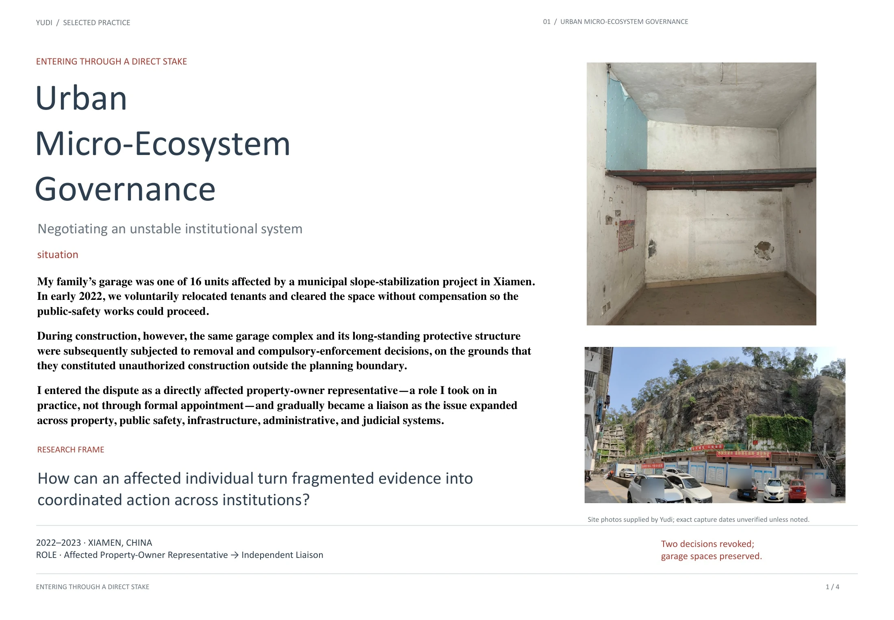
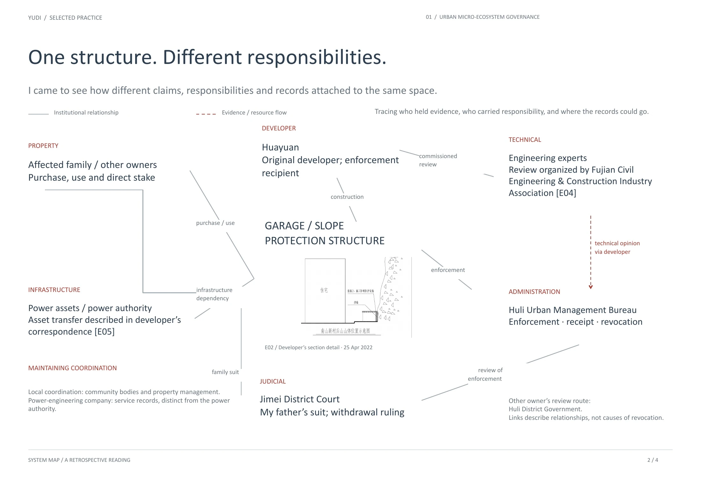
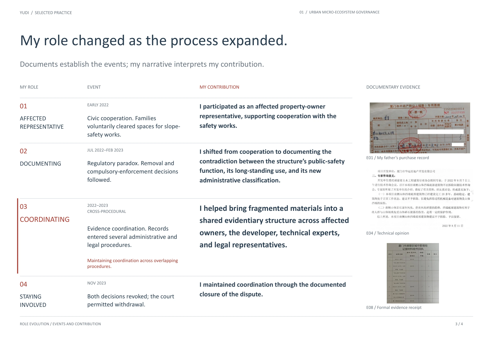
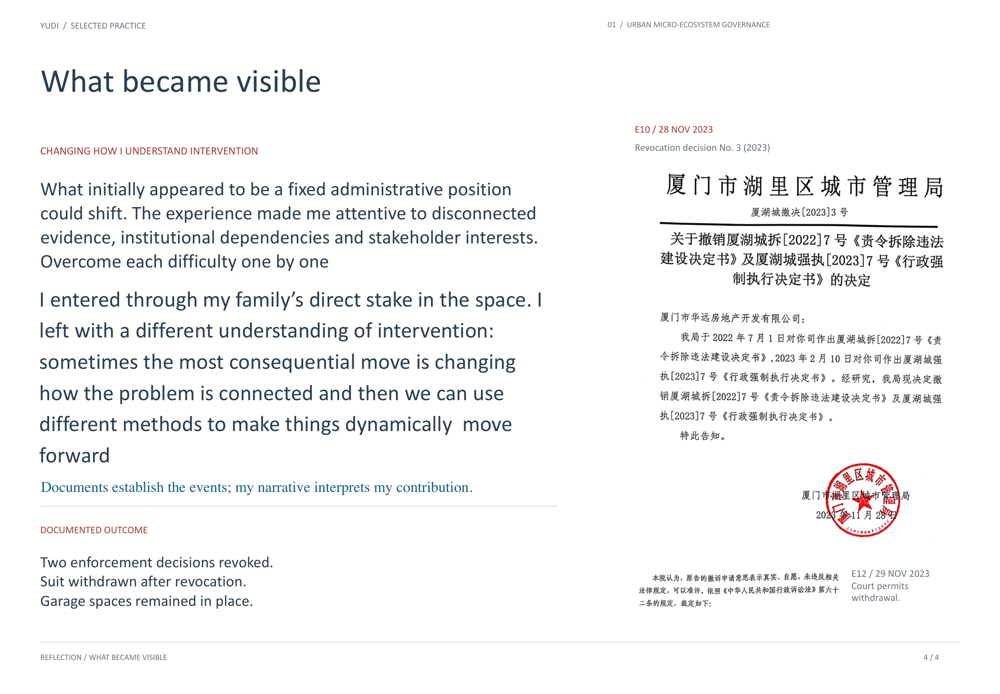

01 / COORDINATION · CIVIC SYSTEM
Urban Micro-Ecosystem Governance
How can different actors build a shared basis for action within the same reality?
A government slope-safety project affecting my family’s garage became an inquiry into civic coordination. As an affected family member, I helped organize residents, assemble fragmented evidence, and keep communication moving across institutional and technical positions.
Residents faced the consequences, while records and decision-making authority sat across different institutions. The work was to connect what each party knew and could act on. Personal and administrative records are withheld where they could expose private details.
My contribution: Resident coordination, evidence organization, and liaison as an affected family member.Xiamen, China · 2022–2024




DOCUMENTED OUTCOME / NOVEMBER 2023
Two administrative decisions were revoked. The court subsequently approved withdrawal of the related suit.
The records establish the procedural outcome; the project narrative describes my coordination work within it.
Return to index ↑